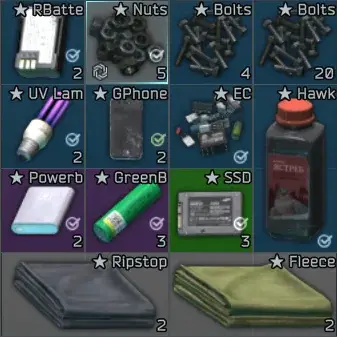

BarterItemsStacks
- Downloads
- 33,336
- Favourites
- 70
- Mod lists
- 113
The mod allows changing the maximum stack size for items. And a little more…
Now allows modifying the following item parameters:
- Maximum stack size
- Maximum resource value
- Height and width
- Weight
- Price
Stack size and resource values are supported for barter items, medical items, special items, repair kits, food and drinks. All other parameters should work for all items without any problems.
Sorting items with resources into stacks may not work correctly due to conflicts with other mods. I can’t track down issues across all mods, so I’ve removed them from the default config. Add them manually and test yourself.
Config can be edited at:
https://127.0.0.1:6969/bis
Parent IDs can be used to assign properties to item groups. Properties are applied only to direct children. Item IDs take priority over parent IDs.
Some parents' IDs:
57864a66245977548f04a81f - Electronics
6759673c76e93d8eb20b2080 - Flyers
57864e4c24597754843f8723 - Flammable materials
590c745b86f7743cc433c5f2 - Others
57864ee62459775490116fc1 - Batteries
57864ada245977548638de91 - Building materials
57864a3d24597754843f8721 - Jewelry
57864c8c245977548867e7f1 - Medical supplies
5448e8d04bdc2ddf718b4569 - Food
5448e8d64bdc2dce718b4568 - Drinks
567849dd4bdc2d150f8b456e - Maps
5448f3a64bdc2d60728b456a - Injectors
5448f3ac4bdc2dce718b4569 - Injury treatment
5448f3a14bdc2d27728b4569 - Drugs
5448f39d4bdc2d0a728b4568 - Medkits
543be5dd4bdc2deb348b4569 - Money
5448ecbe4bdc2d60728b4568 - Info items
5447e0e74bdc2d3c308b4567 - Special items
66abb0743f4d8b145b1612c1 - Multitools
616eb7aea207f41933308f46 - Repair kits
57864bb7245977548b3b66c2 - Tools
Other can be found on any wiki.
Most of them won't work correctly with stack size and max resource.
Price changes require a server restart. Config reload doesn’t work. Height and width changes require clearing cache. Press the “Clean Temp Files” in SPT Launcher. For all other parameters, only a client restart is required.
Version
1.3.2
- Config is now auto-generated if missing.
- Sorting should now work correctly, accounting for stack size and resource amount.
- Changed patches for UIFixes and StashManagementHelper. Should work better. Hopefully.
Version
1.3.1
- Added compatibility with StashManagementHelper
- Items with resource have been removed from the config.
Version
1.3.0
- Added height, width, weight multiplier and price multiplier.
- Added a web page for config.
Version
1.2.5
- added settings to enable stacking fir and non-fir items
- added IDs to the config from the CornerStore
- removed the patch that allowed stacks to be placed in special slots (does not work correctly)
- removed the patch that changed the checkmark’s position (completely)
Version
1.2.4
Returned the checkmark to its place.
Version
1.2.3
- Now you can add parent IDs to the config.
- Quests with placement and protection should work correctly
- Staksize indicator is now above the resources.
- Сheckmarker is now under the item name.
- Stack can now be put in a special slot. (but you can’t combine in these slots, unfortunately.)
Version
1.2.2
- Changed the config loading a bit (added a rollback).
- Added compatibility with UI Fixes. Sorting didn’t work under certain conditions.
Version
1.2.1
- Removed the upper limit for values in the config. It’s all on your conscience.
- Added additional commented IDs to the config for convenience.
Version
1.2.0
Now a little bit more than just for barter items.
- Slightly reworked the config.
- The config now automatically updates after saving. (But you need to restart the game client.)
- You can now set the maximum resource value.
- Fuel/filter/amulet now take one item from the stack.
- Now only items with the maximum resource value are stacked.
- Added a restriction on using a item with a resource from a stack.
- You can no longer place a stack in the Cultist Circle.
- Quests that require placing items now remove one item from the stack.
- Added a check for MedKitComponent, FoodDrinkComponent and RepairKitComponent.
- Added compatibility with the MergeConsumables mod.
Version
1.1.2
FIR/nonFIR no longer stack
Version
1.1.1
Disabled merge patch because it breaks the highlighting of items. For now, FIR and nonFIR stacks still do not work correctly.
Version
1.1.0
- FIR and non-FIR items no longer stack.
- Resource items now display their quantity.
- Resource items can now only be stacked with the same quantity.
- Hideout now consumes the required number of items from the stack.
- HideoutInProgress should work correctly.
- Added several items to items.jsonc.
Version
1.0.0
Initial release